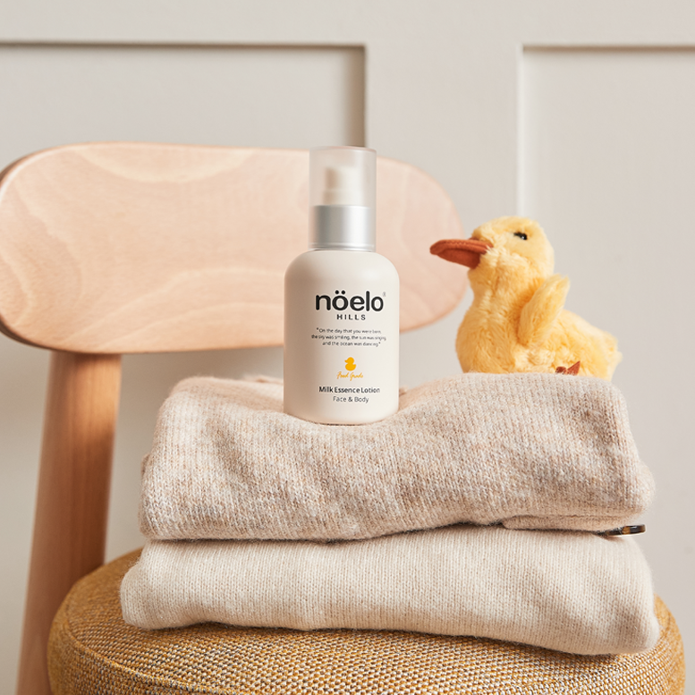

STUDY GROUP ANYONE?
이미 수년동안 화장품 업계에 몸담고 있었지만, 앞으로 더 좋은 전문가로 발전하기 위한 공부모임. 이 모임에서 어느날 살펴보게 된 영역은 어린이 스킨케어였어요. 가정에서 엄마로도 활약하는
그녀들에게는 특히 큰 의미가 있었죠. 화장품 연구원, 의학 선생님들과 의논하며 다양한 의견이 오갔답니다. 그 결과 어린이 스킨케어를 조금 더 나은 관점에서 제공해야겠다는 생각이 싹텄죠.
노엘로힐스는 이렇게 시작되었습니다.
노엘로힐스는 이렇게 시작되었습니다.
